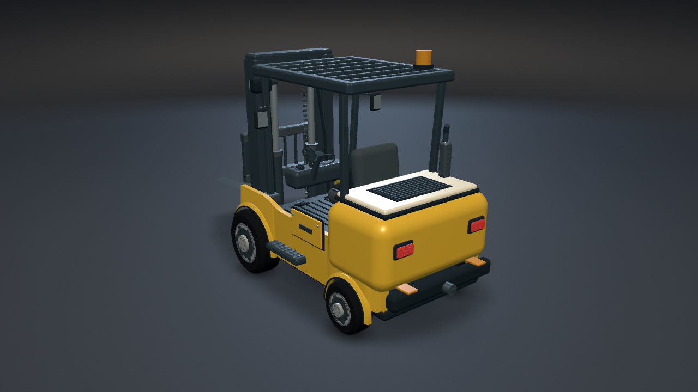
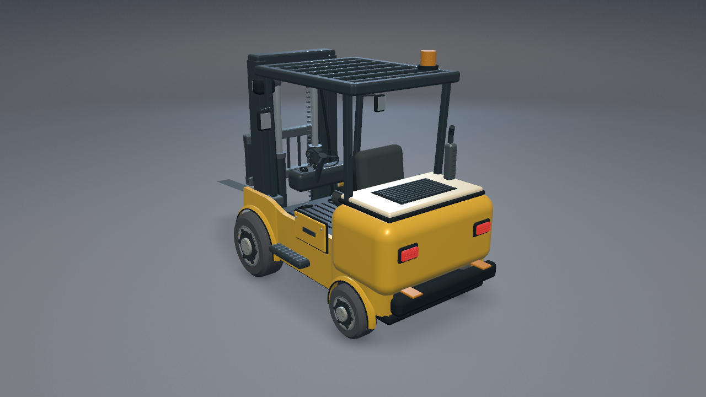
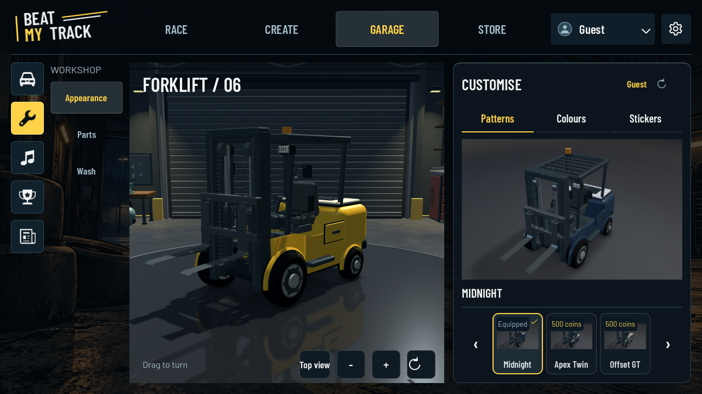

Lower rear cylinder and end fitting removed; upper exhaust retained. Native geometry is checked in both detail levels. F80-01/F80-02/R01/Q01.
204 clearance/turning checks, 102 headless / 111 Compatibility / 110 desktop Mobile checks, 143 full-car five-lap/replay checks and two real verifier tests pass. All 49 photos and catalogue artwork are refreshed/imported. Initial shared-font startup failures and the small typed-array correction remain recorded. No physical-device test performed.



Commands, measurements and limits ? 80 km/h bridge and steering matrix ? Scoped source patch ? Native asset payload